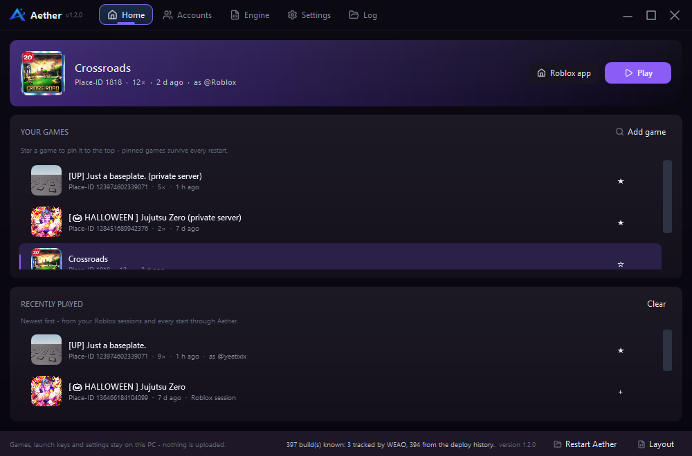
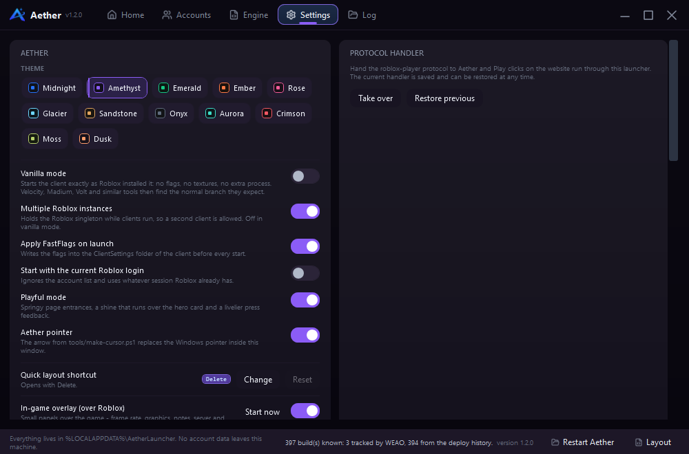

Accounts
Save sessions, check them and launch as any of them. Keys are encrypted with Windows DPAPI and sent only to Roblox.
Windows 10 / 11 · 64-bit
Accounts, installed versions, FastFlags and a real in-game overlay — kept in one quiet window. Aether runs on your PC, not in a browser tab, and never asks for an account of its own.

01 Your library and the last sessions, in one place.
01 Toolbox
Aether is not a storefront or a dashboard. It is the short list of things a Roblox player reaches for, with the rough edges filed down.
Save sessions, check them and launch as any of them. Keys are encrypted with Windows DPAPI and sent only to Roblox.
A watcher holds the Roblox singleton while clients run — even after Aether is closed. Start the same place on every account.
Pin the client another tool expects, or take the newest. Older builds come from WEAO and Roblox’s own deploy history.
99 presets and 153 flags in seven groups. Every suggestion says whether Roblox still reads it — no guessing after a restart.
Search the full flag indexSix separate panels over the game for frame rate, graphics, notes, servers, anti-AFK and the menu. Drag them anywhere.
Games, pinned favourites, notes, fonts and panel positions live under %LOCALAPPDATA%. No account data is uploaded.
02 While you are in the game
The overlay opens where you left it: six small panels, each with its own memory. Nothing is injected into the client, and nothing follows you out of the game.
Drawn above the game. No injection, no memory reads.
03 Settings
Vanilla mode, multiple instances, FastFlags and the overlay are ordinary settings, not hidden flags. Change one, restart the client, and know exactly what changed.

04 Menu script
Aether Menu is still in development. There is no loader or download yet; this page will announce the release when it is ready.
05 Download
Windows 10 or 11, 64-bit. Unpack it, run AetherLauncher.exe and point it at
your Roblox install. No background service, no account, no telemetry.
%LOCALAPPDATA%\Roblox.dotnet build src/AetherLauncher/AetherLauncher.csproj -c Release